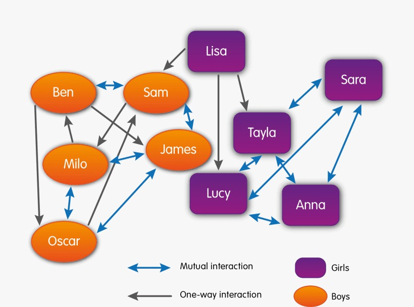
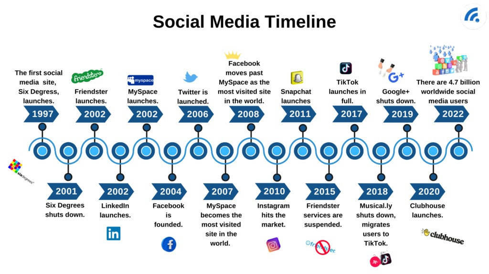

Étudiante : Jaouhara Ait Elassri
Module : Visualisation des réseaux sociaux
Supervision : Mr Nourddine Elmeqddem
1. Introduction
2. Origine de l’analyse des réseaux sociaux
3. La visualisation des réseaux sociaux
4. L’évolution historique des interactions sociales
5. La visualisation des réseaux sociaux numériques
6. Importance de la visualisation historique des réseaux sociaux
7. Conclusion
8. Références
Les interactions sociales constituent un élément fondamental de la vie humaine. Depuis toujours, les individus créent des relations avec d’autres personnes dans différents contextes comme la famille, le travail, l’école ou la communauté. L’étude de ces relations a donné naissance à un domaine scientifique appelé l’analyse des réseaux sociaux.
Avec l’évolution des technologies numériques et des méthodes de visualisation de données, il est aujourd’hui possible de représenter graphiquement les relations sociales sous forme de réseaux composés de nœuds et de liens.
L’analyse des réseaux sociaux trouve ses origines au début du XXe siècle avec les travaux de sociologues et de psychologues sociaux.

La sociométrie est une méthode qui permet d’étudier les relations entre les individus au sein d’un groupe. Moreno a introduit le sociogramme.
Cette méthode a été utilisée dans plusieurs contextes comme les écoles, les organisations ou les groupes sociaux.
Au fil du temps, plusieurs chercheurs ont développé les concepts de l’analyse des réseaux sociaux.
La visualisation des réseaux sociaux consiste à représenter les relations entre les individus sous forme de graphes.
Avant l’apparition d’Internet, les interactions sociales se déroulaient principalement dans la vie quotidienne.

Ces réseaux sociaux traditionnels étaient souvent limités géographiquement.
Avec l’apparition d’Internet et du Web 2.0, les interactions sociales ont profondément changé.
Les réseaux sociaux numériques génèrent une grande quantité de données sur les interactions entre les utilisateurs.
La visualisation historique des réseaux sociaux permet de mieux comprendre les transformations sociales.
La visualisation historique des réseaux sociaux représente un outil important pour comprendre l’évolution des interactions humaines.
Degenne, A., & Forsé, M. (2004). Les réseaux sociaux.
Wellman, B. (2000). Networked Communities.
Ciranna, S. (2021). Les évolutions du contenu textuel.